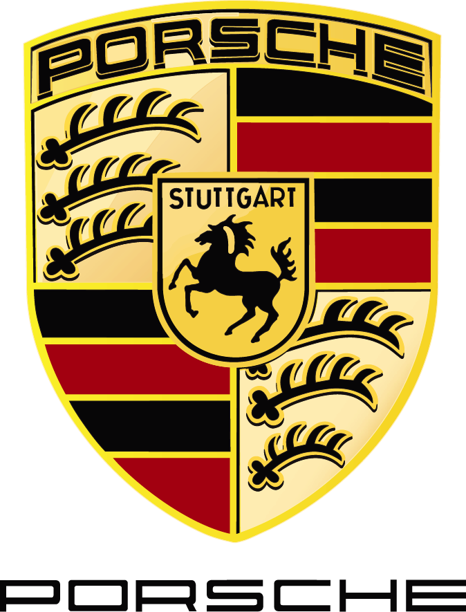

4.8){this.classList.add('logo-superwide');}else if(r>3){this.classList.add('logo-wide');}" onerror="const fb=this.dataset.fallback;if(fb&&this.src!==fb){this.src=fb;return;}this.style.display='none'">Tego
Tego, Ege Bölgesi bölgesiyle ilişkilendirilen bir zeytinyağı markasıdır. Modern tasarımlı premium zeytinyağı markası. Genç nesil tüketicilere hitap eden şık ambalajlarıyla öne çıkar.
Şişe ve Ürün Görselleri


Marka Hakkında
Tego, Ege Bölgesi bağlantısıyla öne çıkan bir premium / butik zeytinyağı markasıdır. Tego, Ege Bölgesi bölgesiyle ilişkilendirilen bir zeytinyağı markasıdır. Modern tasarımlı premium zeytinyağı markası. Genç nesil tüketicilere hitap eden şık ambalajlarıyla öne çıkar. Bu marka sayfası, markayı yalnızca tek cümlelik bir tanımla bırakmak yerine; ürün dilini, bölgesel bağlamını, kategori içindeki konumunu ve tüketici açısından ne ifade ettiğini daha açık hale getirmek için hazırlandı. Türkiye'de aynı marka altında farklı sınıflar, farklı ambalajlar ve farklı fiyat seviyeleri bulunabildiği için, kısa bir açıklama çoğu zaman satın alma kararına yetmez. Buradaki amaç, Tego adını daha okunur bir çerçeveye yerleştirmek ve kullanıcıya sonraki karşılaştırmaları için sağlam bir başlangıç noktası sunmaktır.
Tego için açık bir kuruluş yılı bilgisi görünmüyorsa, değerlendirmeyi daha çok ürün dili, bölgesel bağ ve kategori konumu üzerinden yapmak gerekiyor. Ege hattı, Türkiye zeytinyağı haritasında en yoğun ve en çeşitli üretim alanlarından biri olduğu için marka değerlendirmesinde hem bölgesel gelenek hem de modern ürün dili birlikte okunur. Premium ve butik segmentte yer alan markalarda duyusal karakter, hasat vurgusu, sınırlı seri algısı ve sofrada belirgin tat beklentisi daha görünür hale gelir. Bu iki eksen birlikte okunduğunda marka, yalnızca nerede üretildiğiyle değil, nasıl bir tüketici beklentisine cevap verdiğiyle de daha net anlaşılır. Premium ve butik bir markada duyusal karakter, sınırlı seri veya erken hasat söylemi öne çıkabilirken; market segmentinde süreklilik, bulunabilirlik ve aynı markanın farklı seri yapıları daha belirleyici hale gelir. Bölgesel ve yerel üreticilerde ise köken anlatısı, üretici dili ve izlenebilirlik çoğu zaman en önemli fark yaratıcı unsurlar arasında yer alır.
Bu sitedeki sınıflamaya göre marka Memecik çizgisiyle ilişkilendiriliyor. Bu eşleştirme resmi teknik beyan yerine, markanın bölgesi, açıklama dili ve görünen ürün profili birlikte değerlendirilerek hazırlanmış pratik bir okuma çerçevesi olarak düşünülmelidir. Bunun pratik karşılığı şudur: şişe üzerindeki “natürel sızma”, “erken hasat”, “soğuk sıkım”, “organik” ya da bölgesel köken gibi ifadeler, markanın hangi damak profiline ve hangi kullanım senaryosuna daha yakın durduğunu anlamada yardımcı olur. Markayı seçerken yalnızca bir sloganı değil, bu teknik ve duyusal işaretleri birlikte okumak daha sağlıklı sonuç verir. Aynı isim altında bulunan farklı seri ve paketlerin birbirinden ciddi biçimde ayrışabileceği unutulmamalıdır; bu yüzden marka düzeyinde değil ürün düzeyinde karşılaştırma yapmak çoğu zaman daha doğru bir yaklaşımdır.
Resmi web sitesi görünmeyen ya da sınırlı bilgi sunan markalarda, güvenilir satış sayfaları ve etiket üzerindeki zorunlu bilgiler daha dikkatli okunmalıdır. Sayfadaki şişe ve ürün görselleri gerçek marka kaynaklarından veya güvenilir satış sayfalarından derlendiği için, marka algısını yalnızca logo üzerinden değil, gerçek ürün görünümü üzerinden de okumaya yardımcı olur. Cam şişe, teneke, kutu set veya farklı paket yapıları gibi ayrımlar, markanın hedeflediği kullanım biçimini anlamada çoğu zaman düşündüğümüzden daha belirleyicidir. Bir markanın sofralık kullanım mı, günlük mutfak mı, hediye segmenti mi ya da daha yüksek fiyatlı butik bir seri mi öne çıkardığı çoğu zaman görsel sunum ve ürün dili birlikte incelendiğinde daha kolay anlaşılır.
Bu tip markalarda satın alma kararı verirken erken hasat ifadesi, natürel sızma sınıfı, hasat yılı, şişe tipi ve duyusal profil anlatımı birlikte değerlendirilmelidir. Kullanıcı çoğu zaman kahvaltı, salata ve soğuk kullanım için daha karakterli bir yağ arar. Marka değerlendirmesinde dikkat edilmesi gereken bir başka nokta da, aynı ismin altında farklı kalite katmanları bulunabilmesidir. Bu nedenle kullanıcı için en doğru yöntem; önce ürün sınıfını eşitlemek, sonra ambalaj ve paket yapısını karşılaştırmak, en son da fiyatı ve marka güvenini aynı tabloda okumaktır. Özellikle ilk kez denenen bir markada küçük boyutlu ya da daha sınırlı bir ürünle başlamak, aromayı ve tazeliği anlamayı kolaylaştırır; daha sonra daha büyük paketlere geçmek hem bütçeyi hem de tüketim hızını daha doğru yönetmeye yardımcı olur. Böylece markayı sadece reklam dili üzerinden değil, gerçek kullanım deneyimi üzerinden değerlendirmek mümkün hale gelir.
Bu sayfa ayrıca Tego markasını tek başına bırakmaz; ilgili kategori, bölge ve zeytin çeşidi sayfalarına bağlanarak benzer üreticileri görmeyi kolaylaştırır. Böylece kullanıcı yalnızca “bu marka nasıl bir profile sahip?” sorusuna değil, “hangi benzerlerle kıyaslanmalı?”, “hangi bölgesel çizgiye daha yakın duruyor?” ve “hangi kullanım senaryosunda daha mantıklı olabilir?” sorularına da yanıt bulur. Sonuç olarak Tego, logodan veya tek bir kısa tanımdan ibaret bir kayıt olmaktan çıkar; daha bilinçli marka karşılaştırması yapmaya yarayan, bağlamı güçlü ve daha açıklayıcı bir rehber sayfasına dönüşür. Bu yaklaşım, özellikle çok sayıda seçenek arasında kaybolmadan benzer markaları ayırmak isteyen kullanıcılar için daha pratik bir okuma zemini sunar.
Bu sayfadaki görseller çevrimiçi kaynaklardan derlenmiştir. Marka temsilini güçlendirmek için yeni kaynaklar bulundukça güncellenir.
Benzer Markalar
Adatepe
Küçükkuyu, Çanakkale • Premium / Butik Üretici
Detay SayfasıLaleli
İzmir, Ege • Premium / Butik Üretici
Detay SayfasıNovaVera
Edremit, Balıkesir • Premium / Butik Üretici
Detay SayfasıOleamea
Ege Bölgesi • Premium / Butik Üretici
Detay SayfasıBeyaz Altın
Ege Bölgesi • Premium / Butik Üretici
Detay SayfasıButa Assos
Assos, Çanakkale • Premium / Butik Üretici
Detay Sayfası